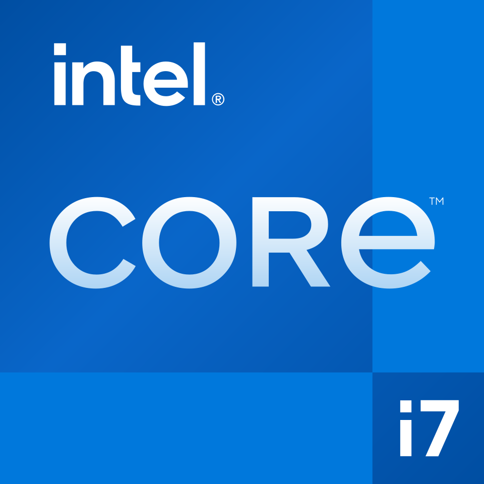

인텔 코어 i7 Intel Core 7
인텔 코어 i7(Intel Core i7)은 인텔 코어 2의 후속으로 출시된 인텔의 중앙 처리 장치(CPU) 브랜드 이름이다. 이는 8세대 x86/x64 아키텍처 마이크로프로세서에 해당한다.
최종 업데이트

인텔 코어 i7는 어떤 브랜드인가
인텔 코어 i7은 네할렘, 샌디브리지, 아이비브리지, 하스웰, 스카이레이크 등 다양한 마이크로아키텍처 CPU의 상위버전으로 판매되는 브랜드이다. 이 설계들은 2006년 이후 대부분의 인텔 마이크로프로세서에 채택되었던 코어 마이크로아키텍처의 후속작에 해당한다.
시스템 버스는 프론트 사이드 버스(FSB)에서 새로운 퀵패스 인터커넥트(QPI)로 대체되었으며, 이를 지원하는 칩셋을 사용하는 마더보드가 필요하다. CPU 소켓은 코어 2까지 쓰이던 LGA 775와는 달리 LGA 1366, LGA 2011 등을 사용하며, 현재 LGA 1151, LGA 1151v2 소켓이 사용된다.
네할렘 마이크로아키텍처는 많은 새로운 기능을 탑재하여 인텔 코어 2 시리즈에 비해 눈에 띄는 변화를 보인다.
인텔 코어 i7는 어떻게 시작되고 성장했나
인텔 코어 i7(Intel Core i7)은 인텔이 만든 중앙 처리 장치(CPU) 브랜드 이름이다. 이 브랜드는 2008년 10월에 인텔 코어 2의 후속으로 출시되었다.
해당 설계들은 2006년 이후 대부분의 인텔 마이크로프로세서에 채택된 코어 마이크로아키텍처의 후속작이다. DDR3 SDRAM 메모리 컨트롤러를 내장하고, 기존 프론트 사이드 버스(FSB) 대신 퀵패스 인터커넥트(QPI) 기술로 메모리를 관리하는 등 이전 코어 마이크로아키텍처와는 다른 특징을 갖는다.
펜티엄 4 시절에 사용되던 동시 멀티스레딩(SMT) 기술과 유사한 기술이 다시 탑재되었다.
인텔 코어 i7의 브랜드 아이덴티티는 무엇인가
인텔 코어 i7은 인텔 코어 2의 후속으로, 다양한 최신 마이크로아키텍처를 포괄하는 인텔의 상위 CPU 브랜드이다. 퀵패스 인터커넥트(QPI), 통합 메모리 컨트롤러, 네이티브 쿼드코어 디자인, 터보 부스트, 동시 멀티스레딩(SMT) 등 발전된 기능을 통해 차별화된다.
인텔 코어 i7의 대표 제품과 서비스는 무엇인가
인텔 코어 i7 제품군은 다양한 기술적 특징을 포함한다. 시스템 버스는 기존 프론트 사이드 버스(FSB)에서 새로운 퀵패스 인터커넥트(QPI)로 대체되었다.
다이 내부에 DDR3 3채널 메모리 컨트롤러가 통합되어 메모리와 프로세서가 직접 연결된다. 네이티브 쿼드코어 디자인으로, 네 개의 코어와 메모리 컨트롤러 및 캐시가 하나의 다이에 위치한다.
터보 부스트 기술은 사용 중인 코어들이 열 설계 전력(TDP) 내에서 기본 클럭보다 높게 작동하도록 지원한다. 동시 멀티스레딩(SMT) 기술이 탑재되어 네 개의 코어가 동시에 두 개의 스레드를 처리한다.
또한 L1, L2 캐시와 코어 간 공유되는 L3 캐시가 다이에 탑재되어 있다.
인텔 코어 i7는 지금 어떤 상태인가
현재 LGA 1151, LGA 1151v2 등의 CPU 소켓이 사용된다. 코어 i7을 지원하는 일부 마더보드 업체들이 오류 정정 기능(ECC) 지원을 광고하고 있다.
그러나 마더보드 설명서에 따르면 CPU의 ECC 지원 기능이 활성화될 때에만 ECC를 지원한다. 일부 종류는 오류 정정 기능을 지원하지 않는다.
인텔 코어 i7 로고는 어떻게 변해왔나
자주 묻는 질문
인텔 코어 i7는 어떤 산업의 브랜드인가요?
인텔 코어 i7는 기술·전자 분야의 브랜드입니다.
인텔 코어 i7의 브랜드 아이덴티티는 무엇인가요?
인텔 코어 i7은 인텔 코어 2의 후속으로, 다양한 최신 마이크로아키텍처를 포괄하는 인텔의 상위 CPU 브랜드이다.
인텔 코어 i7의 대표 제품은 무엇인가요?
인텔 코어 i7 제품군은 다양한 기술적 특징을 포함한다.
인텔 코어 i7는 현재 어떤 상태인가요?
현재 LGA 1151, LGA 1151v2 등의 CPU 소켓이 사용된다.
출처와 검증
브랜드명은 한글과 원어를 함께 표기하되 데이터에 없는 표기는 만들지 않습니다. 기원 국가·설립연도는 검수된 정의문에서 확인된 값을 우선하고, 없을 때만 공식 웹사이트 URL이 일치하는 위키데이터 개체의 값을 씁니다. 위키데이터 값은 2026-09-07 기준입니다.